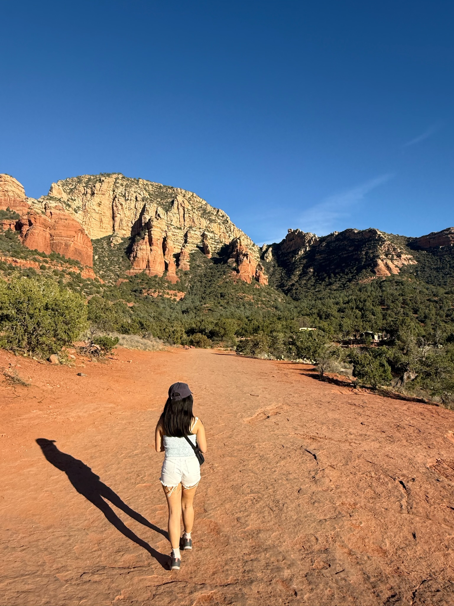
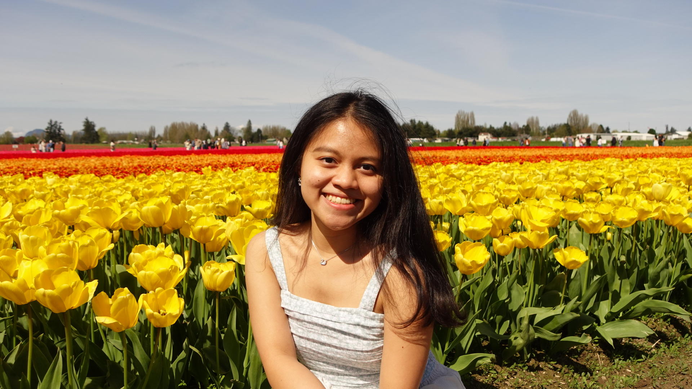
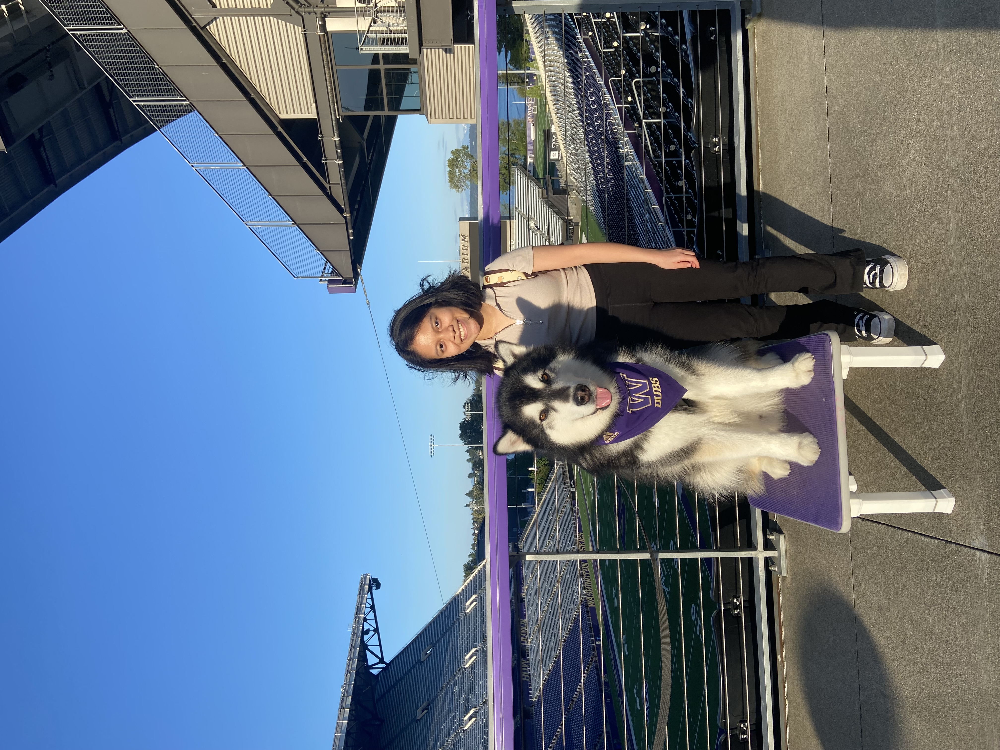
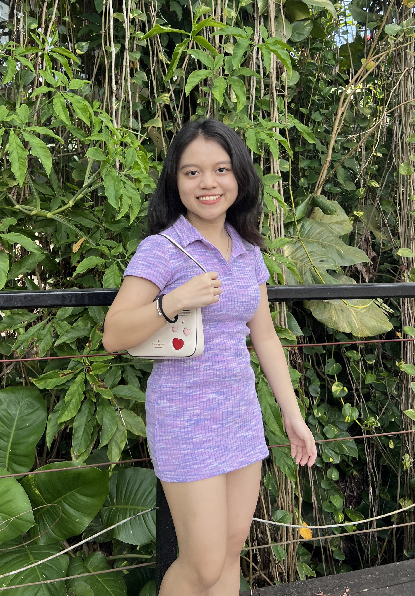

Hello
I am Suk Jin 👋🏻
Aspiring Data Analyst
Aspiring Web Developer
Lifelong Learner
Aspiring Data Analyst
Aspiring Web Developer
Lifelong Learner

I'm a rising senior, majoring in Informatics at University of Washington. Within my major, I chose to specialise in Data Science track, along with minors in Statistics and Education.

My new hobby! Recently learned surfing in San Diego and immediately fell in love with this water sports🌊

I love traveling! (sometimes solo) My most recent trip is the one-month Europe Trip✈️

I'm a matcha girlie. I'll choose matcha over coffee any day anytime🍵

I like hiking too! This is me hiking at the Devil's Bridge Trailhead in Arizona☀️

Baking has been my hobby since high school. This is a cream puff tower I made for Thanksgiving🎂

I like to explore new places. I took this picture in the tulip town called Skagit Valley🌷

Sometimes you will see me going to social events on campus and this is me & UW mascot, dubs🐶
Drag these traits and drop them in the test tube below👇

👈 Tap to try again
Definitely check out my project! I have built my experience in data analysis and web development through classwork, side projects and past work experiences.